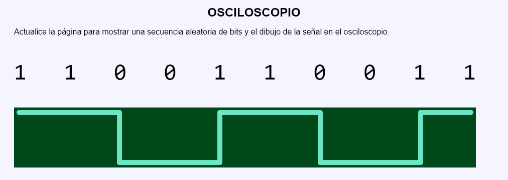

En este ejercicio se debe crear un programa que simule una partida de un juego de cartas y dados. En este juego uno de los jugadores saca diez cartas numeradas del 1 al 10 al azar. Habrá conseguido su objetivo si, al sacar alguna de las cartas, el número de orden coincide con el número de la carta. El otro jugador tira seis dados y milagrosamente siempre salen los seis valores distintos. Habrá conseguido su objetivo si, al tirar alguno de los dados, el número de orden coincide con el valor del dado. Gana el juego el jugador que haya conseguido su objetivo cuando el otro jugador no lo ha conseguido.

<pre style="font-size: 348%">1 1 0 0 1 1 0 0 1 1 </pre>
<p>
<svg version="1.1" xmlns="http://www.w3.org/2000/svg"
width="920" height="120" viewbox="-0.1 -0.1 9.2 1.2" style="background-color: hwb(142 0% 72%);">
<g transform="translate(0, 0)">
<line x1="0" y1="0" x2="1" y2="0" stroke="hwb(162 42% 10%)" stroke-width="0.1" stroke-linecap="round"/>
</g>
<g transform="translate(1, 0)">
<polyline points="0,0 1,0 1,1" stroke="hwb(162 42% 10%)" stroke-width="0.1" fill="none" stroke-linecap="round" stroke-linejoin="round" />
</g>
<g transform="translate(2, 0)">
<line x1="0" y1="1" x2="1" y2="1" stroke="hwb(162 42% 10%)" stroke-width="0.1" stroke-linecap="round" />
</g>
<g transform="translate(3, 0)">
<polyline points="0,1 1,1 1,0" stroke="hwb(162 42% 10%)" stroke-width="0.1" fill="none" stroke-linecap="round" stroke-linejoin="round" />
</g>
...
</svg>
</p>